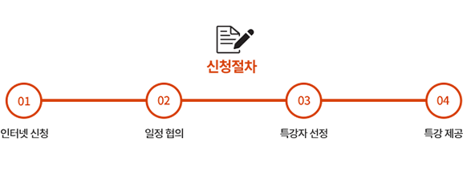

중학교 교사
자유학기
SW멘토란?
중학교 자유학기를 통한 SW 진로 탐색
중학교 한 학기 동안 중간·기말시험의 압박에서 벗어나 자유롭게 자신의 적성과 진로를 탐색하는 자유학기제를 통해, 아이들에게 SW와 관련된 진로를 알려주고 적성을 발견할 수 있는 기회를 제공해주는 프로그램입니다.
현업 종사자와 기관, 기업의 교육기부
보다 생생한 진로 교육을 위해 기업, 학회, 기관을 포함한 다양한 단체들과 현업 종사자들의 참여와 교육기부로 이루어지고 있습니다.
자유학기 SW멘토 특강 신청 안내
자유학기제의 16년 전면 시행에 앞서, “서울 및 경기지역”의 중학교를 대상으로 SW관련 진로와 직업에 대한 이해를 높이고자 특강을 진행하고 있습니다. 중학생들에게 SW의 진로탐색에 대한 좋은 기회를 제공해주세요.
- 신청대상 : 서울·경기 지역 중학교 (향후 전국 확대 예정)
- 신청기한 : ~2015년 12월 31일
- 특강 제공 시간 : 1,2교시 (45~90분)
- 특강자 : SW기업 및 업계 전문가
- 주제 : SW의 이해와 진로, 현재와 미래, 생활 속의 SW등 다양한 주제
- 장소 : 신청 학교 교내 (특강자 방문 진행)
- 문의 : 소프트웨어정책연구소 예영선 연구원(070-4915-7984 / eyeseon@spri.kr)
